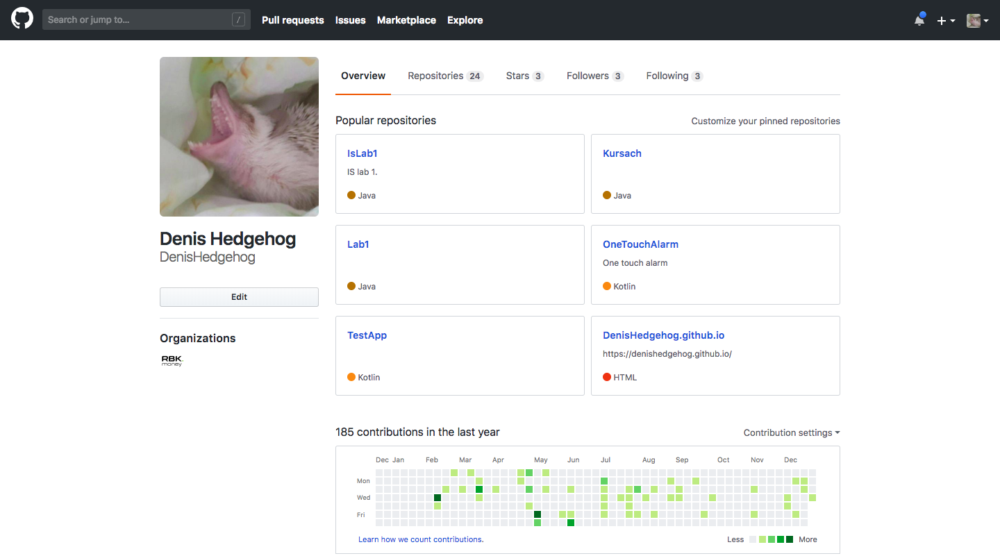
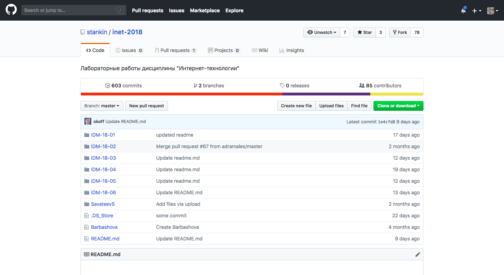
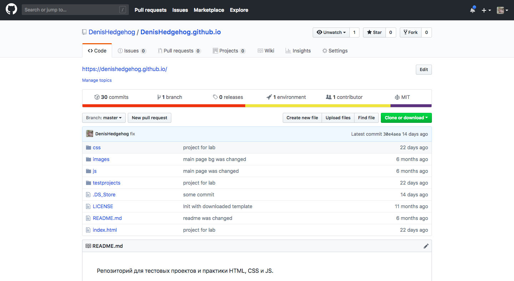
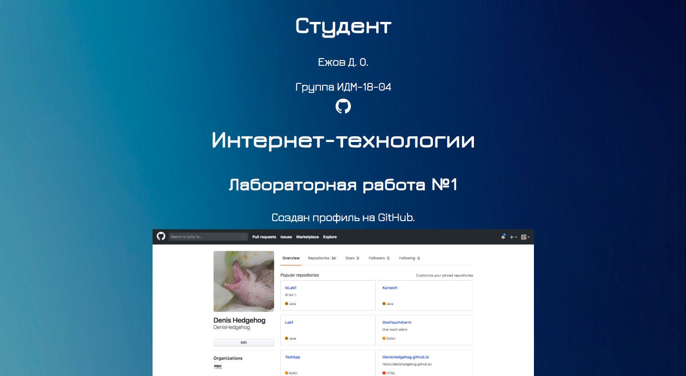
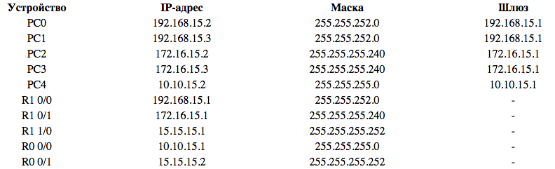

Студент
Ежов Д. О.
Группа ИДМ-18-04

Интернет-технологии
Лабораторная работа №1
Создан профиль на GitHub.

Произведено подключение к репозиторию на GitHub.

Создан репозиторий для сайта с использованием GitHub Pages.

Создана страница с отчетом.

Лабораторная работа №2
Цель: создание списка задач с использованием HTML, CSS, JS, LocalStogage, JSON.
Проект

Приложение "Список задач" позволяет записывать задачи в Local storage и удалять их отдельно или сразу очистить список задач.
Лабораторная работа №3
Рассчитаны IP-адреса.

Созданы 2 сети A и B, в каждой из которых по одному коммутатору и два компьютера. Затем эти сети были связаны маршутизатором. После была создан ещё один маршутизатор для новой сети С. Далее соединили маршутизаторы между собой. В конце настраиваем маршутизацию между всеми созданными сетями, настраиваем удаленный доступ для этих сетей и подключаемся к ним по telnet.